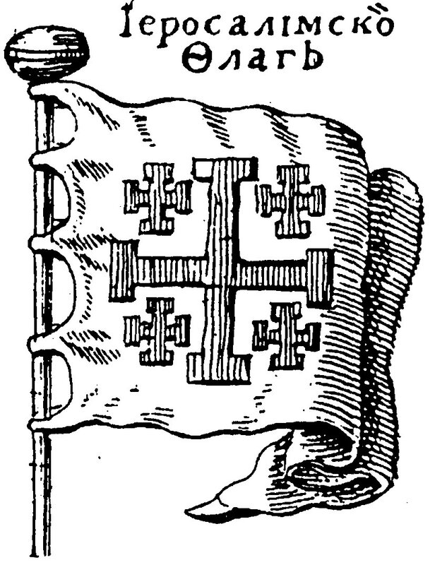
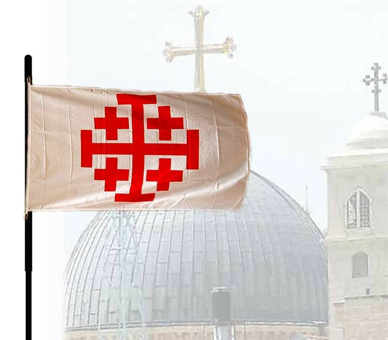
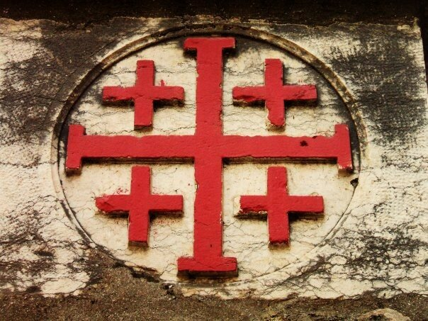
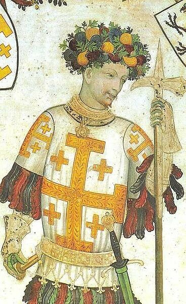
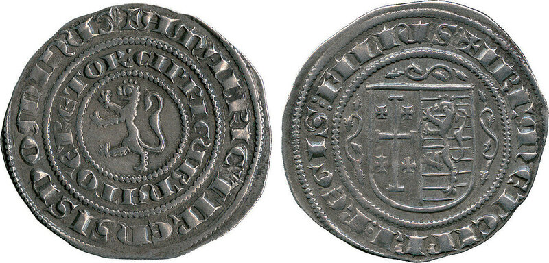
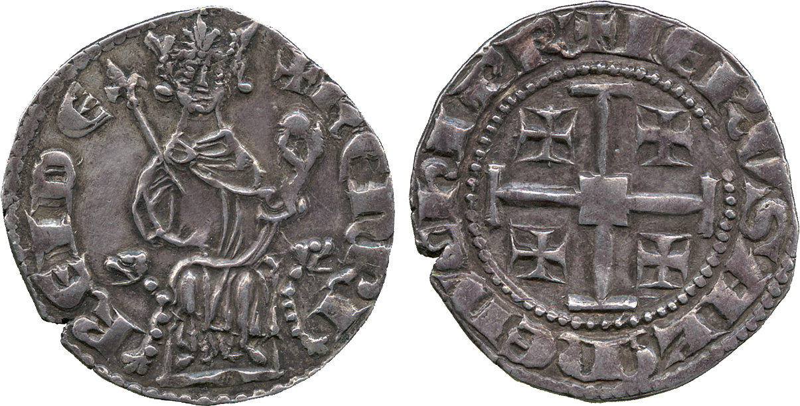
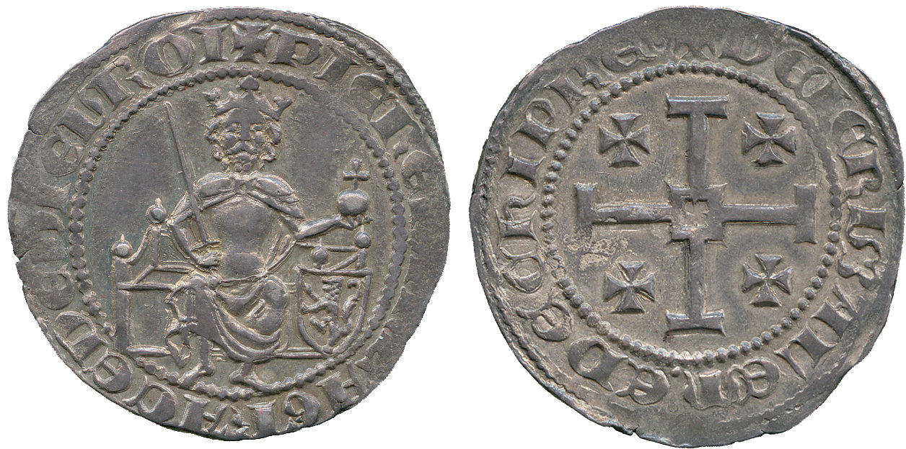
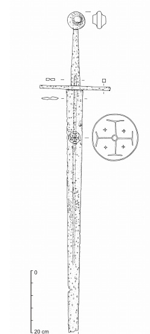
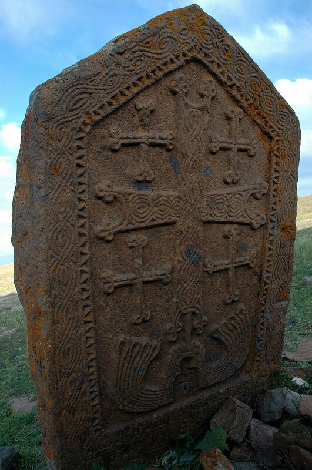

Натыкаясь то и дело в хронике дня на красивый грузинский флаг с пятью крестами, задумался: а ведь где-то, причем глубоко в истории, в морской истории, уже встречался такой дизайн. Решил разобраться с этим, поэтому сейчас нам предстоит экскурс в историю корабельных флагов вообще и историю иерусалимского флага в частности. Ведь грузинский флаг – это как раз вариация иерусалимского. Но давайте всё по порядку.
Таблица морских флагов (1756, Jacques Nicolas Bellin) (кликабельно)
Началось все у меня с поисков ответа на вопрос: каким образом законодательно регулируется право государств, не имеющих выхода к морю, на предоставление гражданским судам своего флага. Конкретно это касалось Швейцарии. Известно, что в условиях второй мировой войны, когда все морские грузоперевозки товаров, предназначенных для Швейцарии, были фактически блокированы флотами воюющих коалиций, Федеральный совет республики принял решение разработать и ввести в действие собственное морское законодательство и создать свой морской флот – флот нейтрального сухопутного государства. Задача была поставлена перед базельским специалистом по международному морскому праву Робертом Хаабом, который успешно решил ее в месячный срок; в апреле 1941 года новый закон вступил в силу, и швейцарский флаг был поднят над дюжиной торговых кораблей, приобретенных Конфедерацией. Ввиду того, что по закону на кораблях под флагом нейтрального государства могут работать только граждане нейтральных стран, экипажи были набраны из представителей держав, не входящих в коалиции воюющих сторон. Портом приписки кораблей швейцарского флота стал Базель, флот вырос постепенно до почти 40 судов.
Однако попытки Швейцарии создать флот под своим флагом не ограничиваются отмеченным выше периодом, а имеют долгую историю. Нас будет интересовать попытка (которая, правда, закончилась неудачей) провести соответствующий закон через Федеральный Совет в шестидесятых годах XIX века. Точнее, нам интересна аргументация необходимости этого шага, выдвинутая его сторонниками. Вот краткая цитата из письма инициаторов проекта в Федеральный Совет:
"II y a plusieurs Etats, qui exploitent la navigation sous leur propre pavilion sans toucher immediatement a la mer. Aujourd'hui encore le pavilion de Jerusalem est generalement reconnu sur mer, bien que ce soit une ville d'interieur. Si nous sommes bien informes, c'est le Prieur de Jerusalem, qui accorde 1'autorisation de faire usage du Pavilion."
Имеется множество государств, которые, не имея непосредственного выхода к морю, осуществляют тем не менее мореходство под своим флагом. Сегодня всеми признан флаг Иерусалима, чисто сухопутного города. Право на использование этого флага предоставляет иерусалимский приор.
Если мы посмотрим популярную в свое время работу Карла Алярда «Книга о флагах» (Издана в Амстердаме в 1705 г. и в Москве в 1709 г. Комментированное (П.И. Белавенец) издание 1911 г. есть в Ленинке), то там содержится такое описание:
51. ІЕРУСАЛІМСКОІ ФЛАГЪ,
серебряноі, на которомъ болшоі золотоі крестъ съ поперечнымі бревнамі на всякомъ концѣ, а во всякомъ квартіерѣ, по золотому кресту маленкому, таковы каковъ і болшоі подобіемъ.
и приведена иллюстрация (черно-белая)

«Крест с поперечными бревнами на всяком конце» - это так называемый «костыльный крест» или «крест потент» - равноконечный крест, состоящий из двух одинаковых прямоугольных перекладин, пересекающихся под прямым углом с равными засечками на всех концах.
Вернувшись к нашей первой картинке, увидим, что там цвета Иерусалимского флага совсем другие: красные кресты на белом фоне.
Так какого же цвета были символы на Иерусалимском морском флаге?
В известном труде анлийского юриста Траверса Туисса (Twiss, Travers, 1809-1897) по международному праву (The law of nations considered as independent political communities), в томе, касающемся законов мирного времени, приводится описание этого флага.
The flag in question, which is styled the Flag of Jerusalem, is also known by the title of the Flag of the Holy Land (la Terra Santa), and amongst the sailors of the Levant is often spoken of as " The Five Cross Flag."
The flag is in fact a large Red Cross on a White Field, with a small red cross in each of the four angles between the limbs of the Central Cross, and it is the same flag which is hoisted on the Latin Convents in Jerusalem.
(p. 330-331)
Обсуждаемый флаг, который называется Флагом Иерусалима, также известен под названием Флаг Святой Земли (la Terra Santa), а среди моряков Леванта о нем часто говорят как о «Флаге пяти крестов».
"Флаг представляет собой большой красный крест на белом фоне, в каждом углу которого, образованном оконечностями центрального креста, находятся маленькие красные кресты; это тот же флаг, который поднят над латинскими монастырями (конвентами) в Иерусалиме."
Действительно, над учреждениями францисканцев в Иерусалиме,

а также на стенах занимаемых ими зданий мы видим подобные символы.

Никто в точности не может сказать, когда и где появился этот символ. Основная версия, что соратники Готфрида Бульонского, одного из предводителей Первого крестового похода 1096-1099 гг., присвоили ему такой герб в честь его заслуг перед христианством. Известное изображение Готфрида вроде бы подтверждает эту гипотезу.

Готфрид Бульонский, фреска Giacomo Jaquerio, 1418—1430 гг.
Но здесь имеется несколько нестыковок. Не будем говорить о том, что изображение это появилось три с гаком века спустя после того похода. И помимо этого изображения есть косвенные подтверждения, что «Иерусалимский крест» был символом больших заслуг в крестоносном движении. Он появлялся а монетах регента Кипрского королевства Амори II (1306-1310)

короля Иерусалима и Кипра Генриха II де Лузиньяна

кипрского короля Петра I

Клеймо с изображением Иерусалимского креста мы встречаем на оружии, которое, по заключению экспертов, могло принадлежать участникам первых крестовых походов

Меч из коллекции Венгерского национального музея (изображение опубликовано Arkadiusz Michalak )
И все же мы не можем считать, что возникновение этого символа связано с крестоносным движением. Известны многочисленные изображения креста в эпоху, предшествующую эпохе крестоносцев. Вот, например, как на этом камне из древней Армении (IV век н.э., монастырь Акори)

Да и в самой Западной Европе мы встречаем флаги с иерусалимским крестом в годы, предшествовавшие первому крестовому походу. Как, например, на этом фрагменте гобелена из Байё, который относят к 1070-м годам.
Граф Булони Евстахий II, отец двух будущих королей Иерусалимских: Годфрида Бульонского и Балдуина I. Активный участник нормандского завоевания Англии.(Кликабельно)
Выходит, что нам не удалось проследить возникновение этого известного христианского символа. Впрочем, мы и не ставили такой цели. Наша задача – разобраться с морской биографией иерусалимского креста. Но об этом мы поговорим уже в следующий раз.